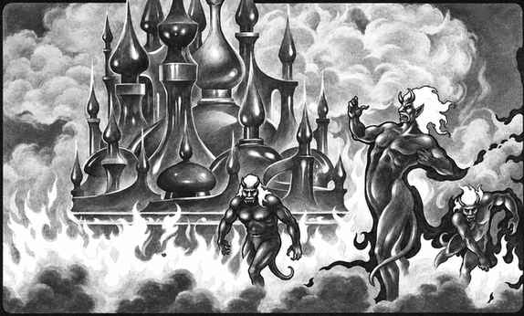

元素火焰位面 · The Plane of Elemental Fire
元素火焰位面是极端危险的地狱般环境，未经保护的旅行者几乎无法生存。这里的火焰会燃烧所有燃料，天空和地面都由火、热气、烟、熔岩和灼热金属构成。火元素、火巨灵、火焰公爵和火焰相关的准元素生物在此居住。
元素火焰位面同时也是火焰与锻造的领域。火焰公爵、阿泽尔、火巨灵和某些伟大力量在此拥有城堡、熔炉和战场。旅行者从内层位面中心向外移动时，会先遇到更明亮的火焰，再进入灰烬、烟、岩浆和准元素火焰的边界；向相反方向移动则会进入更冷的火焰和元素烟。
